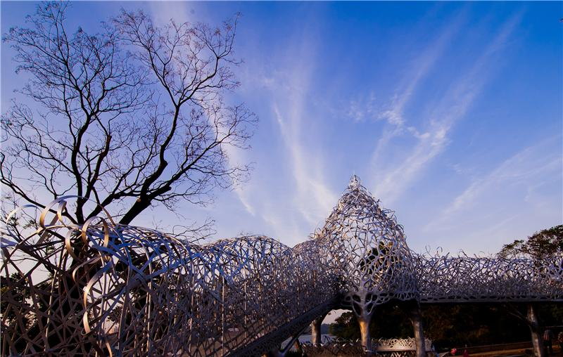
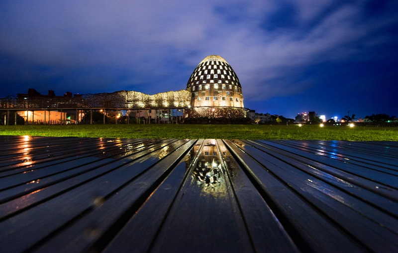
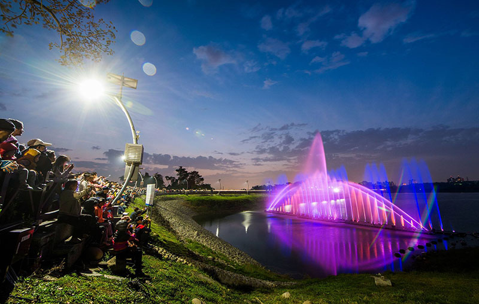
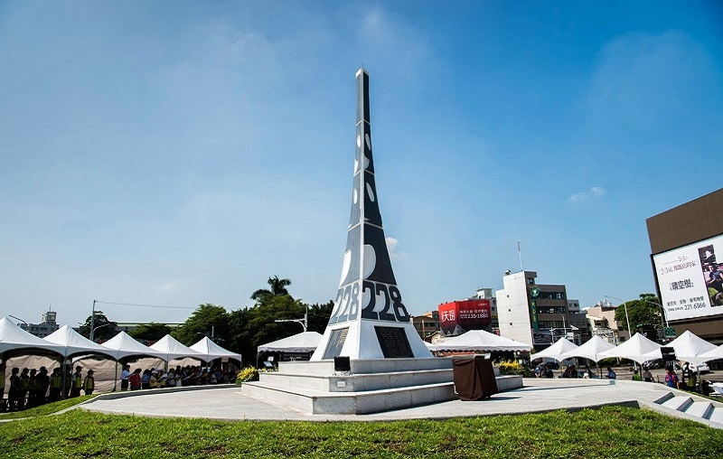

OurCity's Feature
我們的城市-------嘉義

「月影潭心」是享譽國際的藝術家王文志先生創作，位於蘭潭風景區，2012年正式啟用。「蘭潭泛月」美景為「月影」， 藍色地磚組成湖心波紋般的「潭心」，與「談心」有諧音之趣，充分傳達蘭潭「月、水、遊潭」的地景意象。

此座落在縱貫鐵路旁的大型藝術創作，期望讓來來去去的旅客看見嘉義市最美麗的新景點，更可以讓遠到的觀光客在親歷森林之歌時，在平地也能感受阿里山森林的自然靈性，成為阿里山林業村新地標，也為嘉義市增添藝文新風貌。

鮮明紅色的拱型吊橋，白天黑夜各有風情。行嘉吊橋串聯鄰近河濱公園、親水公園、自行車步道等豐富自然生態，夕陽西下時，也可漫步橋上，看滿空霞影，襯著金碧輝煌的慈玄宮，構成絕美的幸福美景。

蘭潭擁有豐富的生態資源，諸羅樹蛙、五色鳥及多元豐富的植物與昆蟲等常見於此，是許多生態保育愛好者喜愛的好場域。隔著環潭道路與蘭潭相對，則是有「嘉義市後花園」之美名的蘭潭後山公園。

臺灣用來紀念二二八事件的紀念公園有數十座之多，其中最早的二二八紀念碑座落於嘉義市彌陀路和忠義橋分叉的三角地帶。本紀念碑為一白色三角錐形的紀念碑，於民國78年8月19日落成，是臺灣第一座二二八紀念碑，也是全球首座二二八紀念碑。